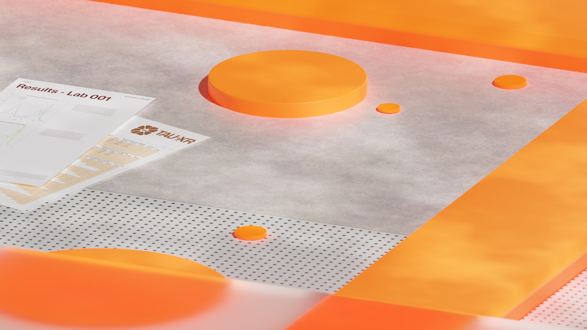
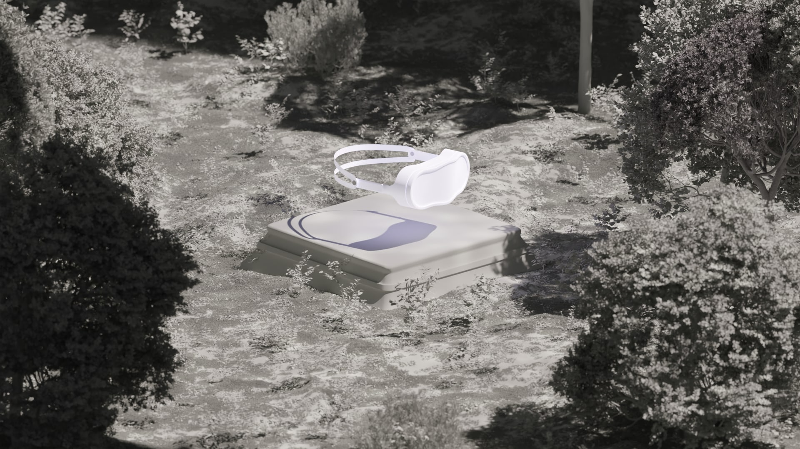
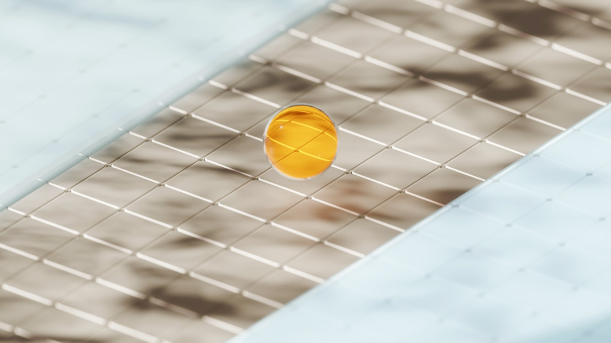
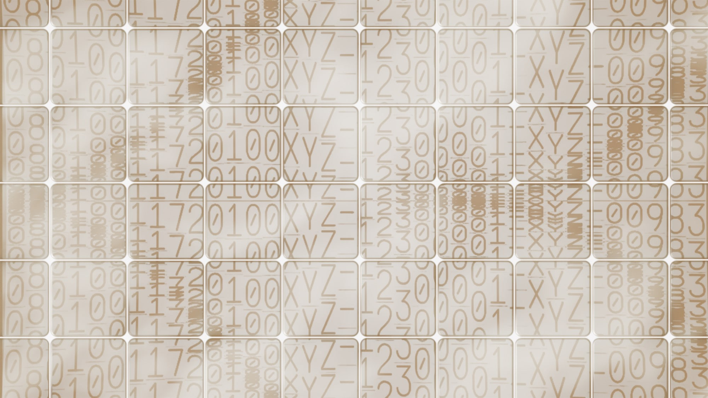
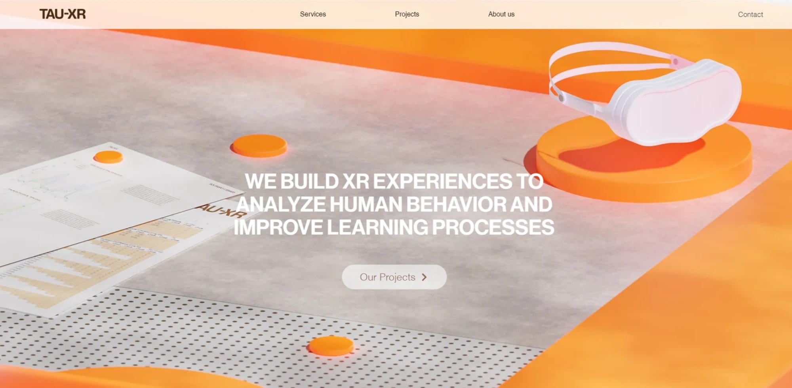

TAU-XR
Branding and visual language for the Tel Aviv University XR Center, including a custom logotype, web design and printed materials.









Branding and visual language for the Tel Aviv University XR Center, including a custom logotype, web design and printed materials.




